Historical Impact Assessment (HIA) Sudan exercise#
A HIA has two purposes: First, understanding in detail what kind of problems are caused by a particular hazard, allows people to make informed decisions on the selection of early actions to counter those problems. Secondly, without a good understanding of which magnitude of flood causes significant humanitarian impact, one can not adjust trigger levels accordingly to tackle those significant events. This exercise is based on the article Historical Impact Assessment (HIA) for Flood in Sudan. In this article, there are seven steps listed for the HIA in Sudan. This exercise will start with step 3- Selecting datasets.
Aim of the exercise:#
In this exercise, you will be introduced to the fundamental principles of this quantitative HIA approach. You will build a simplified HIA dataset with real-world data. Furthermore, you will visualize the produced dataset in QGIS. To analyse the data in QGIS is just one thing you can do with a HIA dataset. The wide range of other options like the production of a timeline infographic will not be covered in this exercise.
Relevant Wiki Articles#
Data sources#
Download the training data folder here and save it on your PC. Unzip the .zip file! The folder is called GIS_AA_HIA_Sudan_ex1 and contains the whole standard folder structure with all data in the input folder and the additional documentation in the documentation folder.
Tasks#
Step 1: Area of interest ✅#
This step is outlined in the article Historical Impact Assessment (HIA) for Flood in Sudan will not be the subject of this exercise.
Step 2: Finding Flood Disaster Timeframes ✅#
Attention
This step is outlined in the article Historical Impact Assessment (HIA) for Flood in Sudan will not be the subject of this exercise.
We want to tie single pieces of information, like impacts, to known flood events in Sudan. Thus, we first need a comprehensive list of such events. In the case of Sudan, there are two sources: EM-DAT and ReliefWeb. EM-DAT is a disaster database that lists events above a certain severity.
Note
EM-DAT Inclusion Criteria
At least ten deaths (including dead and missing).
At least 100 affected (people affected, injured, or homeless).
A call for international assistance or an emergency declaration.
ReliefWeb is actually an information platform for humanitarian response, but it also has a list of active and past disasters.
Both databases list the same events for the most part. By comparing the two datasets and only selecting unique events, we receive a list of all significant flood events in Sudan and the time frames of each event. This can easily be done in Excel
Note
EM-Date and ReliefWeb data overview In total, there were 35 flood events reported between 1988 and 2021
EM-Dat lists 21 flood events in Sudan from 2000 to 2024
Relief Web lists 29 events between 1988 and 2024
Flood Events List
Start Year |
Start Date |
End Date |
|---|---|---|
1988 |
1988-08-06 |
1988-09-15 |
1994 |
1994-09-20 |
1988-10-21 |
1996 |
1996-08-12 |
1996-10-23 |
1998 |
1998-09-04 |
1998-10-15 |
2001 |
2001-08-06 |
2001-09-13 |
2002 |
2002-08-03 |
2002-08-03 |
2003 |
2003-07-28 |
2003-08-21 |
2005 |
2005-08-29 |
2005-09-06 |
2005 |
2005-07-14 |
2005-07-15 |
2006 |
2006-08-13 |
2006-09-26 |
2006 |
2006-08-07 |
2006-08-07 |
2007 |
2007-07-03 |
2007-10-08 |
2009 |
2009-08-16 |
2009-08-26 |
2010 |
2010-07-10 |
2010-07-15 |
2010 |
2010-07-01 |
2010-10-07 |
2012 |
2012-08-01 |
2012-08-12 |
2013 |
2013-08-01 |
2013-08-21 |
2014 |
2014-07-25 |
2014-09 |
2015 |
2015-08-08 |
2015-08-09 |
2017 |
2017-06-30 |
2017-08-14 |
2018 |
2018-06-18 |
2018-06-27 |
2018 |
2018-07-23 |
2018-07-30 |
2019 |
2019-06-08 |
2019-06-18 |
2020 |
2020-06 |
2020-09-09 |
2021 |
2021-07-20 |
2021-09-24 |
Task 3: Selecting datasets#
In this step, we decide which datasets we want to include in the HIA. In this context, there are three sources we can turn to: the Sudan Red Crescent Society (SRCS), ReliefWeb, and FloodList. For this exercise, we will limit ourselves to datasets from ReliefWeb and FloodList. In the ‘Input’ folder of the exercise data, you can find the folder ‘reports_articles.’ This folder contains 10 datasets.
Your task now is to go through the reports and decide which one you will use in the HIA. Place the dataset you want to use in a new folder.
As a decision support, you can use these three parameters:
Currentness
The assumption is that later after the event, the picture of what happens becomes clearer, thus the data report is more reliable. This means., if you have multiple similar datasets containing similar data, chose the newer one.
Example
In this example, the later map from the 13th of November shows more affected people for instance in Central Darfur the the map published on the 9th of November.
SUDAN Situation Report 09 Nov 2020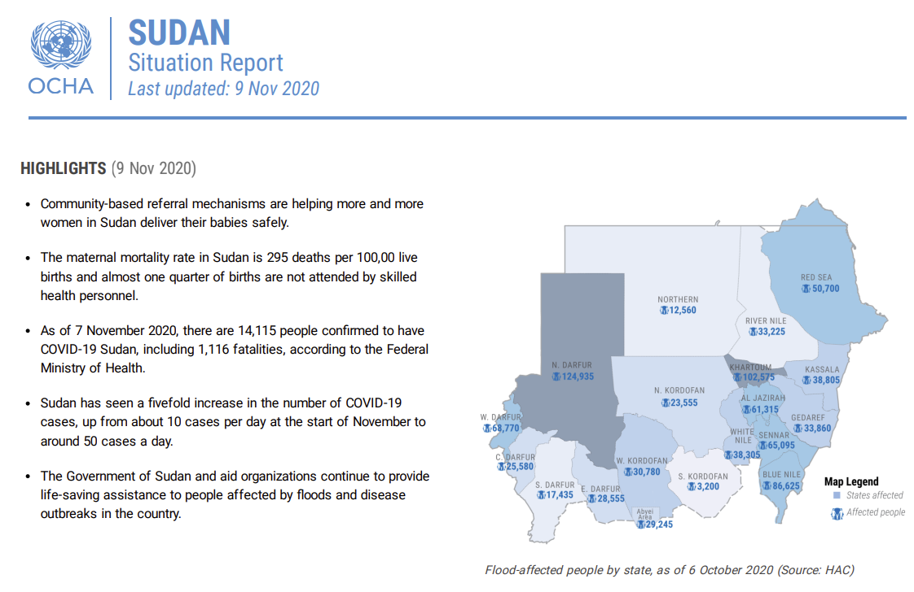
SUDAN Situation Report 13 Nov 2020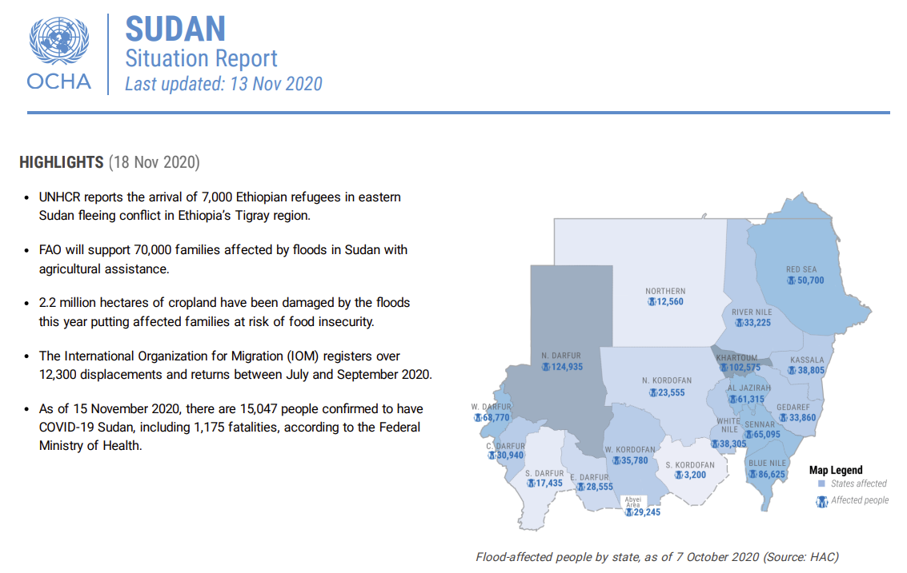
Uniqueness
It is important to not only use data from one source because of confidence. The assumption is that different organizations have different capacities and work in different areas; thus, they may have better information in some locations or sectors than other organizations.
Give the datasets you selected an ID. This is essential to be able to later pinpoint from which dataset a particular information was pulled. Change the name of the file to the new ID. Furthermore, create a list of the datasets you want to use for the HIA.
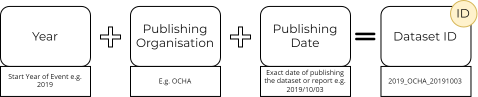
{kind=link}
{kind=link}
{kind=link}
Use the method below to come up with the ID’s. Expected outcome:
A folder with all datasets to be used in the HIA. The dataset’s names should be their ID.
A list of all datasets to be used, with ID.
Task 4: Preparing Excel table Structure ✅#
Attention
In this exercise, you will be provided with the ready-to-use table. You can find it „temp“ folder of the exercise data structure.
Before we can start compiling data, we need to prepare the Excel table structure we want to use. Depending on the context the table structure can look differently. In the end, you need to be able to collect information on when something happened, where it happened and what happened. Furthermore, you need to be able to identify from which dataset you take every single information. Below you can find short explanations of the different columns of the table structure.
Date
The date information must accommodate the flood event information from the list of flood events prepared in Step 2. And potential dates of specific impact information. The date portion of the whole Excel table would look like this:
Start Year |
Start Date |
End Date |
Date |
|---|---|---|---|
2018 |
2018-07-01 |
2018-08-29 |
2018-07-12 |
2019 |
2019-06-01 |
2019-06-31 |
|
2020 |
2020-07-20 |
2020-08-11 |
Data source
This section is simply one column with the ID of the dataset from which the particular information was taken.
source_ID |
|---|
2018_OCHA_20180819.pdf |
2019_floodlist_20190613.pdf |
2020_PDNRA_20210531.pdf |
Location
Practical all impact information refers to state, locality, town or refugee/IDP camp level. This means we need a column for each of these levels and one column to indicate the level the information is referring to. In this way, we can later filter for all information on for example locality level.
admin_level |
admin_1 |
admin_2 |
admin_3 |
admin_camp |
|---|---|---|---|---|
State |
West Kordofan |
|||
Locality |
South Darfur |
Beliel |
||
Camp |
South Darfur |
Beliel |
Kalma Camp |
In the Sudan HIA, most of the information has been on the state level, whereas the team found very little information on the camp level.
Tip
We highly recommend using the English names of states and localities which are compatible with P-codes. Those can be found here.
Admin 1 - States
ADM1_EN |
ADM1_AR |
ADM1_PCODE |
|---|---|---|
Abyei PCA |
إدارية أبيي |
SD19 |
Aj Jazirah |
الجزيرة |
SD15 |
Blue Nile |
النيل الأزرق |
SD08 |
Central Darfur |
وسط دارفور |
SD06 |
East Darfur |
شرق دارفور |
SD05 |
Gedaref |
القضارف |
SD12 |
Kassala |
كسلا |
SD11 |
Khartoum |
الخرطوم |
SD01 |
North Darfur |
شمال دارفور |
SD02 |
North Kordofan |
شمال كردفان |
SD13 |
Northern |
الشمالية |
SD17 |
Red Sea |
البحر الأحمر |
SD10 |
River Nile |
نهر النيل |
SD16 |
Sennar |
سنار |
SD14 |
South Darfur |
جنوب دارفور |
SD03 |
South Kordofan |
جنوب كردفان |
SD07 |
West Darfur |
غرب دارفور |
SD04 |
West Kordofan |
غرب كردفان |
SD18 |
White Nile |
النيل الأبيض |
SD09 |
Admin 2- Localities
ADM2_EN |
ADM2_AR |
ADM2_PCODE |
ADM1_EN |
ADM1_AR |
ADM1_PCODE |
|---|---|---|---|---|---|
Abassiya |
العباسية |
SD07090 |
South Kordofan |
جنوب كردفان |
SD07 |
Abu Hamad |
أبو حمد |
SD16008 |
River Nile |
نهر النيل |
SD16 |
Abu Hujar |
أبو حجار |
SD14037 |
Sennar |
سنار |
SD14 |
Abu Jabrah |
أبو جابرة |
SD05140 |
East Darfur |
شرق دارفور |
SD05 |
Abu Jubayhah |
أبو جبيهة |
SD07088 |
South Kordofan |
جنوب كردفان |
SD07 |
Abu Karinka |
أبو كارنكا |
SD05155 |
East Darfur |
شرق دارفور |
SD05 |
Abu Kershola |
أبو كرشولا |
SD07104 |
South Kordofan |
جنوب كردفان |
SD07 |
Abu Zabad |
أبو زبد |
SD18028 |
West Kordofan |
غرب كردفان |
SD18 |
Abyei |
أبيي |
SD18087 |
West Kordofan |
غرب كردفان |
SD18 |
Abyei PCA area |
إدارية أبيي |
SD19001 |
Abyei PCA |
إدارية أبيي |
SD19 |
Ad Dabbah |
الدبة |
SD17019 |
Northern |
الشمالية |
SD17 |
Ad Dali |
الدالي |
SD14039 |
Sennar |
سنار |
SD14 |
Ad Damar |
الدامر |
SD16011 |
River Nile |
نهر النيل |
SD16 |
Ad Dinder |
الدندر |
SD14040 |
Sennar |
سنار |
SD14 |
Ad Diwaim |
الدويم |
SD09044 |
White Nile |
النيل الأبيض |
SD09 |
Ad Du’ayn |
الضعين |
SD05142 |
East Darfur |
شرق دارفور |
SD05 |
Adila |
عديلة |
SD05139 |
East Darfur |
شرق دارفور |
SD05 |
Ag Geneina |
الجنينة |
SD04115 |
West Darfur |
غرب دارفور |
SD04 |
Agig |
عقيق |
SD10072 |
Red Sea |
البحر الأحمر |
SD10 |
Aj Jabalain |
الجبلين |
SD09051 |
White Nile |
النيل الأبيض |
SD09 |
Al Buhaira |
البحيرة |
SD16014 |
River Nile |
نهر النيل |
SD16 |
Al Buram |
البرام |
SD07099 |
South Kordofan |
جنوب كردفان |
SD07 |
Al Burgaig |
البرقيق |
SD17016 |
Northern |
الشمالية |
SD17 |
Al Butanah |
البطانة |
SD12073 |
Gedaref |
القضارف |
SD12 |
Al Dibab |
الدبب |
SD18103 |
West Kordofan |
غرب كردفان |
SD18 |
Al Fao |
الفاو |
SD12074 |
Gedaref |
القضارف |
SD12 |
Al Fashaga |
الفشقة |
SD12075 |
Gedaref |
القضارف |
SD12 |
Al Fasher |
الفاشر |
SD02114 |
North Darfur |
شمال دارفور |
SD02 |
Al Firdous |
الفردوس |
SD05152 |
East Darfur |
شرق دارفور |
SD05 |
Al Galabat Al Gharbyah - Kassab |
القلابات الغربية - كساب |
SD12078 |
Gedaref |
القضارف |
SD12 |
Al Ganab |
القنب |
SD10069 |
Red Sea |
البحر الأحمر |
SD10 |
Al Gitaina |
القطينة |
SD09050 |
White Nile |
النيل الأبيض |
SD09 |
Al Golid |
القولد |
SD17018 |
Northern |
الشمالية |
SD17 |
Al Hasahisa |
الحصاحيصا |
SD15034 |
Aj Jazirah |
الجزيرة |
SD15 |
Al Idia |
الأضية |
SD18104 |
West Kordofan |
غرب كردفان |
SD18 |
Al Kamlin |
الكاملين |
SD15035 |
Aj Jazirah |
الجزيرة |
SD15 |
Al Khiwai |
الخوي |
SD18105 |
West Kordofan |
غرب كردفان |
SD18 |
Al Koma |
الكومة |
SD02116 |
North Darfur |
شمال دارفور |
SD02 |
Al Kurmuk |
الكرمك |
SD08106 |
Blue Nile |
النيل الأزرق |
SD08 |
Al Lagowa |
لقاوة |
SD18102 |
West Kordofan |
غرب كردفان |
SD18 |
Al Lait |
اللعيت |
SD02169 |
North Darfur |
شمال دارفور |
SD02 |
Al Leri |
الليري |
SD07105 |
South Kordofan |
جنوب كردفان |
SD07 |
Al Mafaza |
المفازة |
SD12082 |
Gedaref |
القضارف |
SD12 |
Al Malha |
المالحة |
SD02117 |
North Darfur |
شمال دارفور |
SD02 |
Al Manaqil |
المناقل |
SD15036 |
Aj Jazirah |
الجزيرة |
SD15 |
Al Matama |
المتمة |
SD16009 |
River Nile |
نهر النيل |
SD16 |
Al Meiram |
الميرم |
SD18106 |
West Kordofan |
غرب كردفان |
SD18 |
Al Quoz |
القوز |
SD07094 |
South Kordofan |
جنوب كردفان |
SD07 |
Al Qurashi |
القرشي |
SD15037 |
Aj Jazirah |
الجزيرة |
SD15 |
Al Qureisha |
القريشة |
SD12076 |
Gedaref |
القضارف |
SD12 |
Al Radoum |
الردوم |
SD03141 |
South Darfur |
جنوب دارفور |
SD03 |
Al Wihda |
الوحدة |
SD03150 |
South Darfur |
جنوب دارفور |
SD03 |
An Nuhud |
النهود |
SD18022 |
West Kordofan |
غرب كردفان |
SD18 |
Ar Rahad |
الرهد |
SD12084 |
Gedaref |
القضارف |
SD12 |
Ar Rahad |
الرهد |
SD13030 |
North Kordofan |
شمال كردفان |
SD13 |
Ar Rashad |
الرشاد |
SD07093 |
South Kordofan |
جنوب كردفان |
SD07 |
Ar Reif Ash Shargi |
الريف الشرقي |
SD07097 |
South Kordofan |
جنوب كردفان |
SD07 |
Ar Rusayris |
الروصيرص |
SD08107 |
Blue Nile |
النيل الأزرق |
SD08 |
As Salam - SD |
السلام - ج د |
SD03166 |
South Darfur |
جنوب دارفور |
SD03 |
As Salam - WK |
السلام - غ ك |
SD18086 |
West Kordofan |
غرب كردفان |
SD18 |
As Salam / Ar Rawat |
السلام / الراوات |
SD09049 |
White Nile |
النيل الأبيض |
SD09 |
As Serief |
السريف |
SD02118 |
North Darfur |
شمال دارفور |
SD02 |
As Suki |
السوكي |
SD14041 |
Sennar |
سنار |
SD14 |
As Sunta |
السنطة |
SD03156 |
South Darfur |
جنوب دارفور |
SD03 |
As Sunut |
السنوط |
SD18092 |
West Kordofan |
غرب كردفان |
SD18 |
Assalaya |
عسلاية |
SD05163 |
East Darfur |
شرق دارفور |
SD05 |
At Tadamon - BN |
التضامن - ن ق |
SD08108 |
Blue Nile |
النيل الأزرق |
SD08 |
At Tadamon - SK |
التضامن - ج ك |
SD07106 |
South Kordofan |
جنوب كردفان |
SD07 |
At Tawisha |
الطويشة |
SD02119 |
North Darfur |
شمال دارفور |
SD02 |
At Tina |
الطينة |
SD02171 |
North Darfur |
شمال دارفور |
SD02 |
Atbara |
عطبرة |
SD16012 |
River Nile |
نهر النيل |
SD16 |
Azum |
أزوم |
SD06110 |
Central Darfur |
وسط دارفور |
SD06 |
Babanusa |
بابنوسة |
SD18100 |
West Kordofan |
غرب كردفان |
SD18 |
Bahr Al Arab |
بحر العرب |
SD05160 |
East Darfur |
شرق دارفور |
SD05 |
Bahri |
بحري |
SD01003 |
Khartoum |
الخرطوم |
SD01 |
Bara |
بارا |
SD13026 |
North Kordofan |
شمال كردفان |
SD13 |
Barbar |
بربر |
SD16013 |
River Nile |
نهر النيل |
SD16 |
Basundah |
باسندة |
SD12077 |
Gedaref |
القضارف |
SD12 |
Baw |
باو |
SD08104 |
Blue Nile |
النيل الأزرق |
SD08 |
Beida |
بيضا |
SD04111 |
West Darfur |
غرب دارفور |
SD04 |
Beliel |
بليل |
SD03162 |
South Darfur |
جنوب دارفور |
SD03 |
Bendasi |
بندسي |
SD06112 |
Central Darfur |
وسط دارفور |
SD06 |
Buram |
برام |
SD03161 |
South Darfur |
جنوب دارفور |
SD03 |
Damso |
دمسو |
SD03172 |
South Darfur |
جنوب دارفور |
SD03 |
Dar As Salam |
دار السلام |
SD02113 |
North Darfur |
شمال دارفور |
SD02 |
Delami |
دلامي |
SD07107 |
South Kordofan |
جنوب كردفان |
SD07 |
Delgo |
دلقو |
SD17015 |
Northern |
الشمالية |
SD17 |
Dilling |
الدلنج |
SD07095 |
South Kordofan |
جنوب كردفان |
SD07 |
Dongola |
دنقلا |
SD17017 |
Northern |
الشمالية |
SD17 |
Dordieb |
درديب |
SD10063 |
Red Sea |
البحر الأحمر |
SD10 |
Ed Al Fursan |
عد الفرسان |
SD03143 |
South Darfur |
جنوب دارفور |
SD03 |
Ed Damazine |
الدمازين |
SD08105 |
Blue Nile |
النيل الأزرق |
SD08 |
Foro Baranga |
فور برنقا |
SD04121 |
West Darfur |
غرب دارفور |
SD04 |
Gala’a Al Nahal |
قلع النحل |
SD12079 |
Gedaref |
القضارف |
SD12 |
Galabat Ash-Shargiah |
القلابات الشرقية |
SD12083 |
Gedaref |
القضارف |
SD12 |
Gebrat Al Sheikh |
جبرة الشيخ |
SD13027 |
North Kordofan |
شمال كردفان |
SD13 |
Geisan |
قيسان |
SD08109 |
Blue Nile |
النيل الأزرق |
SD08 |
Gereida |
قريضة |
SD03153 |
South Darfur |
جنوب دارفور |
SD03 |
Ghadeer |
غدير |
SD07108 |
South Kordofan |
جنوب كردفان |
SD07 |
Gharb Bara |
غرب بارا |
SD13029 |
North Kordofan |
شمال كردفان |
SD13 |
Gharb Jabal Marrah |
غرب جبل مرة |
SD06131 |
Central Darfur |
وسط دارفور |
SD06 |
Ghubaish |
غبيش |
SD18021 |
West Kordofan |
غرب كردفان |
SD18 |
Guli |
قلي |
SD09052 |
White Nile |
النيل الأبيض |
SD09 |
Habila - SK |
هبيلة - ج ك |
SD07103 |
South Kordofan |
جنوب كردفان |
SD07 |
Habila - WD |
هبيلة - غ د |
SD04122 |
West Darfur |
غرب دارفور |
SD04 |
Hala’ib |
حلايب |
SD10066 |
Red Sea |
البحر الأحمر |
SD10 |
Halfa |
حلفا |
SD17014 |
Northern |
الشمالية |
SD17 |
Halfa Aj Jadeedah |
حلفا الجديدة |
SD11052 |
Kassala |
كسلا |
SD11 |
Haya |
هيا |
SD10070 |
Red Sea |
البحر الأحمر |
SD10 |
Heiban |
هيبان |
SD07096 |
South Kordofan |
جنوب كردفان |
SD07 |
Janub Al Jazirah |
جنوب الجزيرة |
SD15031 |
Aj Jazirah |
الجزيرة |
SD15 |
Jebel Awlia |
جبل أولياء |
SD01001 |
Khartoum |
الخرطوم |
SD01 |
Jebel Moon |
جبل مون |
SD04123 |
West Darfur |
غرب دارفور |
SD04 |
Jubayt Elma’aadin |
جبيت المعادن |
SD10067 |
Red Sea |
البحر الأحمر |
SD10 |
Kadugli |
كادقلي |
SD07098 |
South Kordofan |
جنوب كردفان |
SD07 |
Karrari |
كرري |
SD01005 |
Khartoum |
الخرطوم |
SD01 |
Kas |
كاس |
SD03144 |
South Darfur |
جنوب دارفور |
SD03 |
Kateila |
كتيلا |
SD03159 |
South Darfur |
جنوب دارفور |
SD03 |
Kebkabiya |
كبكابية |
SD02124 |
North Darfur |
شمال دارفور |
SD02 |
Keilak |
كيلك |
SD18085 |
West Kordofan |
غرب كردفان |
SD18 |
Kelemando |
كلمندو |
SD02126 |
North Darfur |
شمال دارفور |
SD02 |
Kereneik |
كرينك |
SD04125 |
West Darfur |
غرب دارفور |
SD04 |
Kernoi |
كرنوي |
SD02168 |
North Darfur |
شمال دارفور |
SD02 |
Khartoum |
الخرطوم |
SD01007 |
Khartoum |
الخرطوم |
SD01 |
Kosti |
كوستي |
SD09047 |
White Nile |
النيل الأبيض |
SD09 |
Kubum |
كبم |
SD03157 |
South Darfur |
جنوب دارفور |
SD03 |
Kulbus |
كلبس |
SD04127 |
West Darfur |
غرب دارفور |
SD04 |
Kutum |
كتم |
SD02128 |
North Darfur |
شمال دارفور |
SD02 |
Madeinat Al Gedaref |
مدينة القضارف |
SD12080 |
Gedaref |
القضارف |
SD12 |
Madeinat Kassala |
مدينة كسلا |
SD11053 |
Kassala |
كسلا |
SD11 |
Medani Al Kubra |
مدني الكبري |
SD15030 |
Aj Jazirah |
الجزيرة |
SD15 |
Melit |
مليط |
SD02129 |
North Darfur |
شمال دارفور |
SD02 |
Mershing |
مرشنج |
SD03145 |
South Darfur |
جنوب دارفور |
SD03 |
Merwoe |
مروي |
SD17020 |
Northern |
الشمالية |
SD17 |
Mukjar |
مكجر |
SD06130 |
Central Darfur |
وسط دارفور |
SD06 |
Nitega |
نتيقة |
SD03151 |
South Darfur |
جنوب دارفور |
SD03 |
Nyala Janoub |
نيالا جنوب |
SD03167 |
South Darfur |
جنوب دارفور |
SD03 |
Nyala Shimal |
نيالا شمال |
SD03164 |
South Darfur |
جنوب دارفور |
SD03 |
Port Sudan |
بورتسودان |
SD10064 |
Red Sea |
البحر الأحمر |
SD10 |
Rabak |
ربك |
SD09046 |
White Nile |
النيل الأبيض |
SD09 |
Rehaid Albirdi |
رهيد البردي |
SD03158 |
South Darfur |
جنوب دارفور |
SD03 |
Reifi Aroma |
ريفى أروما |
SD11055 |
Kassala |
كسلا |
SD11 |
Reifi Gharb Kassala |
ريفى غرب كسلا |
SD11054 |
Kassala |
كسلا |
SD11 |
Reifi Hamashkureib |
ريفى همش كوريب |
SD11058 |
Kassala |
كسلا |
SD11 |
Reifi Kassla |
ريفى كسلا |
SD11056 |
Kassala |
كسلا |
SD11 |
Reifi Khashm Elgirba |
ريفى خشم القربة |
SD11060 |
Kassala |
كسلا |
SD11 |
Reifi Nahr Atbara |
ريفى نهر عطبرة |
SD11062 |
Kassala |
كسلا |
SD11 |
Reifi Shamal Ad Delta |
ريفى شمال الدلتا |
SD11057 |
Kassala |
كسلا |
SD11 |
Reifi Telkok |
ريفى تلكوك |
SD11059 |
Kassala |
كسلا |
SD11 |
Reifi Wad Elhilaiw |
ريفى ود الحليو |
SD11061 |
Kassala |
كسلا |
SD11 |
Saraf Omra |
سرف عمرة |
SD02133 |
North Darfur |
شمال دارفور |
SD02 |
Sawakin |
سواكن |
SD10068 |
Red Sea |
البحر الأحمر |
SD10 |
Sennar |
سنار |
SD14038 |
Sennar |
سنار |
SD14 |
Shamal Jabal Marrah |
شمال جبل مرة |
SD06132 |
Central Darfur |
وسط دارفور |
SD06 |
Sharg Aj Jabal |
شرق الجبل |
SD03147 |
South Darfur |
جنوب دارفور |
SD03 |
Sharg Al Jazirah |
شرق الجزيرة |
SD15033 |
Aj Jazirah |
الجزيرة |
SD15 |
Sharg An Neel |
شرق النيل |
SD01004 |
Khartoum |
الخرطوم |
SD01 |
Sharg Sennar |
شرق سنار |
SD14042 |
Sennar |
سنار |
SD14 |
Shattaya |
شطاية |
SD03154 |
South Darfur |
جنوب دارفور |
SD03 |
Sheikan |
شيكان |
SD13024 |
North Kordofan |
شمال كردفان |
SD13 |
Shendi |
شندي |
SD16010 |
River Nile |
نهر النيل |
SD16 |
Shia’ria |
شعيرية |
SD05148 |
East Darfur |
شرق دارفور |
SD05 |
Sinja |
سنجة |
SD14043 |
Sennar |
سنار |
SD14 |
Sinkat |
سنكات |
SD10071 |
Red Sea |
البحر الأحمر |
SD10 |
Sirba |
سربا |
SD04134 |
West Darfur |
غرب دارفور |
SD04 |
Soudari |
سودري |
SD13025 |
North Kordofan |
شمال كردفان |
SD13 |
Talawdi |
تلودي |
SD07089 |
South Kordofan |
جنوب كردفان |
SD07 |
Tawila |
طويلة |
SD02170 |
North Darfur |
شمال دارفور |
SD02 |
Tawkar |
طوكر |
SD10065 |
Red Sea |
البحر الأحمر |
SD10 |
Tendalti |
تندلتي |
SD09048 |
White Nile |
النيل الأبيض |
SD09 |
Tulus |
تلس |
SD03149 |
South Darfur |
جنوب دارفور |
SD03 |
Um Algura |
أم القري |
SD15032 |
Aj Jazirah |
الجزيرة |
SD15 |
Um Bada |
أمبدة |
SD01002 |
Khartoum |
الخرطوم |
SD01 |
Um Baru |
أم برو |
SD02120 |
North Darfur |
شمال دارفور |
SD02 |
Um Dafoug |
أم دافوق |
SD03146 |
South Darfur |
جنوب دارفور |
SD03 |
Um Dam Haj Ahmed |
أم دم حاج أحمد |
SD13028 |
North Kordofan |
شمال كردفان |
SD13 |
Um Dukhun |
أم دخن |
SD06135 |
Central Darfur |
وسط دارفور |
SD06 |
Um Durein |
أم دورين |
SD07091 |
South Kordofan |
جنوب كردفان |
SD07 |
Um Durman |
أم درمان |
SD01006 |
Khartoum |
الخرطوم |
SD01 |
Um Kadadah |
أم كدادة |
SD02136 |
North Darfur |
شمال دارفور |
SD02 |
Um Rawaba |
أم روابة |
SD13023 |
North Kordofan |
شمال كردفان |
SD13 |
Um Rimta |
أم رمتة |
SD09045 |
White Nile |
النيل الأبيض |
SD09 |
Wad Al Mahi |
ود الماحي |
SD08110 |
Blue Nile |
النيل الأزرق |
SD08 |
Wad Bandah |
ود بندة |
SD18029 |
West Kordofan |
غرب كردفان |
SD18 |
Wadi Salih |
وادي صالح |
SD06137 |
Central Darfur |
وسط دارفور |
SD06 |
Wasat Al Gedaref |
وسط القضارف |
SD12081 |
Gedaref |
القضارف |
SD12 |
Wasat Jabal Marrah |
وسط جبل مرة |
SD06139 |
Central Darfur |
وسط دارفور |
SD06 |
Yassin |
يس |
SD05165 |
East Darfur |
شرق دارفور |
SD05 |
Zalingi |
زالنجى |
SD06138 |
Central Darfur |
وسط دارفور |
SD06 |
Impact information
The actual impact information consists of two parts. One part is always the impact type. This explain what happened. For example, people were affected by the flood, the cholera broke out or schools got damaged.
The other part is either the impact quantity or the impact quality. It can not be both! The impact quantity describes simply how many of something. How many people have been affected? How many schools got damaged?
The impact quality is used if something cannot be described with numbers but with “Yes” or “No”. For example, there was a disease outbreak of cholear. Cholera is not a number. Yes there was cholera outbreak. Or a locality was affected -> Yes the locality was affected.
Hence we need three columns to describe impacts: impact_typ, impact_quality and impact_quantity.
impact_typ |
impact_quality |
impact_quantity |
|---|---|---|
houses_damaged_totaly |
2500 |
|
deaths |
6 |
|
disease_cholera |
yes |
It makes sense to list some of the basic impact types we are interested in or which are very commonly reported. Such as affected people or deaths. The list of impact types can be extended on the fly. It is however important to stay consistent. The HeiGIT team used 75 different impact types. You can find the whole list below.
Impact types used in Sudan HIA
Impact Type |
Description |
|---|---|
Affected |
|
Agricultural_land_affected |
|
Agriculturalsectors_fedan |
|
Agriculture_Affected |
|
Agriculture_Bananplantation_damged_totally |
|
Agriculture_crops_damaged |
|
Agriculture_Livestock_crops_damaged |
|
Deaths |
|
Diseases |
|
Economic |
|
Evacuation |
|
Event |
|
Eviromental_sanitation |
|
Flooding |
|
Foodprice_increas |
|
Healt_center_affected |
|
Health_damaged_partially |
|
Health_damaged_totally |
|
HH_Affected |
|
HH_displaced |
|
Houses_damaged_partially |
|
Houses_damaged_totally |
|
Infrastructure_damaged_partially |
|
Infrastructure_electricity_damaged_partially |
|
Injuries |
|
Institutions_damaged_partially |
|
Institutions_damaged_totally |
|
Livestock_Cattle |
|
Livestock_Deaths |
|
Livestock_Goats |
|
Livestock_Poultry |
|
Livestock_Sheep |
|
Mosques_damaged_partally |
|
Mosques_damaged_totally |
|
Mosquitos |
|
Others |
|
Pop_affected |
|
Pop_displaced |
|
Problem_Health_access |
|
Problem_Water_access |
|
Protection_Issus |
|
Public_facilities_damaged_partially |
|
Public_facilities_damaged_totally |
|
Public_facilities_damged_partially |
|
Public_facilities_damged_totally |
|
Public_facilities_schools_affected |
|
Sanitation_partially |
|
School_dropout |
|
Schools_affeacted |
|
Schools_damaged_partially |
|
Schools_damaged_totally |
|
Schools_Primary_damaged_partially |
|
Schools_Primary_damaged_totally |
|
Schools_Secondary_damaged_partially |
|
Schools_Universities_damaged_partially |
|
Shelter |
|
Shops_damaged_partally |
|
Shops_damaged_totally |
|
Villages_affacted |
|
WASH_damaged_partally |
|
WASH_damaged_totally |
|
WASH_drinking_river |
|
WASH_home_latrines_damaged_partially |
|
WASH_latriens_damaged_totally |
|
WASH_latrines_affected |
|
WASH_latrines_damaged_partially |
|
WASH_latrines_damaged_partially |
|
WASH_Latrines_damaged_totally |
|
WASH_latrines_damaged_totaly |
|
WASH_open_defecation |
|
WASH_sewage_damaged_totally |
|
WASH_Water_station_affected |
|
WASH_Water_station_source_damaged_partially |
|
WASH_Water_station_source_damaged_totally |
|
WASH_watersource_contaminated |
Task 5: Data compiling#
Finally, we can start to compile the data. Remember we are using the key + value concept to create a long table. Every piece of information gets one row!
Tipps for data compiling
Compiling the data in EXCEL is a time-intensive and repeatable task. Here are some tips to speed up the process:
Excel copy function:
Try to use the copy function of Excel as much as possible. When taking info from a map, the information in the columns, year, start_date, end_date, date, Source_ID, and admin_level usually stay the same. So you can just copy and paste this information. In most cases, you should only write the name of location, Impact_type, Impact_quality and Impact_quantity.
Use ChatGPT:
If you encounter tables that do not fit into your table structure use ChatGPT to turn them into a long table format. For example, look at the image in the table below.
You can copy the content which produces this text:
DREF Final Report Sudan: Floods 31 May 2013
```md
Affected
State
Locality Houses damage Institutions Sanitation Death
of
Animals
Damage
to
property
crops,
livestock
Wounded
of Death
No of people
affected
completely
partially
Completely
partially
Completely
partially
Sinnar Abohojar/Senja 3,651 4,819 0 0 0 0 0 1 0 1 34,562
Kasalla Algrba/Wad
helio
4,875 2,047 165 44 641 17 0 0 0 35 28,245
White Nile Alrgig/Tandlti/A
lsalam
1,800 1,348 0 0 0 0 0 865 7 7 12,845
Gadarif Aalgalabat/Alma
faza/Alfaw
406 591 0 0 0 0 0 0 0 0 4,068
Khartoum Khartoum 931 1,963 0 0 20 0 0 0 0 0 17,364
Algeziara Um Algora 521 110 0 4 0 0 0 0 0 0 3,786
West Darfur Benddsi/Wadi
Salih
1,600 576 0 0 572 0 0 4 0 4 13,056
Blue Nile Aldamazain/Ba
w
381 2,785 0 0 0 0 0 1 0 1 18,996
Northern Elbrgig/Aldaba 66 302 0 7 0 60 115 0 0 0 2,208
South
Darfur
Kubom 1,000 1,000 0 0 0 0 0 0 0 0 12,000
River Nile Albawga/Shandi
/Aldamir
54 31 0 0 43 40 0 0 0 0 510
North
Kordofan0
Shikan/Um
Roaba
370 2,511 0 0 669 0 0 0 0 0 17,286
South
Kordofan
Aldebb 600 533 0 4 0 0 0 0 0 6,798
Total 16,225 18,616 167 59 1,945 117 115 865 7 49 177,724
```
Go to ChatGPT and use a prompt like „Can you turn this information taken from a Table into a long table format?“ + the table as text
Probably you will have to ask ChatGPT to give you the whole table. Something like: “Super good! Can you give me a table on the other states as well? “
Use Gemini AI:
Google Gemini Can also handle images. For example, it can turn this graph into a table which is much easier to handle than copying everything by hand.
{kind=link}
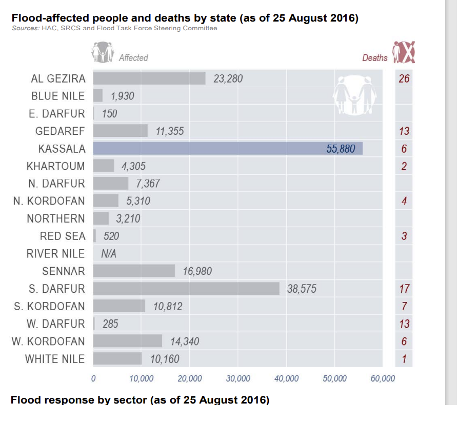
The resulting table can easily be adjusted in Excel.
State |
Affected People |
Deaths |
|---|---|---|
AL GEZIRA |
23,280 |
26 |
BLUE NILE |
1,930 |
- |
E. DARFUR |
150 |
- |
GEDAREF |
11,355 |
13 |
KASSALA |
55,880 |
6 |
KHARTOUM |
4,305 |
2 |
N. DARFUR |
7,367 |
- |
N. KORDOFAN |
5,310 |
4 |
NORTHERN |
3,210 |
- |
RED SEA |
520 |
3 |
RIVER NILE |
N/A |
- |
SENNAR |
16,980 |
- |
S. DARFUR |
38,575 |
17 |
S. KORDOFAN |
10,812 |
7 |
W. DARFUR |
285 |
13 |
W. KORDOFAN |
14,340 |
6 |
WHITE NILE |
10,160 |
1 |
Find a relevant information in a dataset
Date:
Year: This information is mandatory! Check to which year the information is revering.Start_Date&End_Date: If the information on the timeframe of the flood is available, place the start and end date in these columns. This information should be listed in the Flood Events List.Date: If exact information of the date of the impact is available, place it here.
Source_ID: Write the ID in the
Dataset_IDcolumn.Location:
admin_level: Check t which admin level the information is revering to e.g. state, locality, town or camp.admin_1: This information is mandatory! To which state is the information revering?admin_2: If avilebel. To which locality is the information revering?admin_3: If avilebel. To which town is the information revering?admin_camp: If avilebel. To which camp is the information revering?
Attention
Use standardised location names ! It is extremely important to use standardised location names for every piece of information. This will limit the effort we need to put into data cleaning later on.
Impact_type: Select the fitting impact type from the Impact types list or create a new one.Impact_quantity: If quantitative information, place the number here.Impact quality: If qualitative information, place „Yes“ or „No“ here.
Below you can find some examples of pieces of information from different datasets placed in the table structure.
Emergency Plan of Action (EPoA) Sudan: Floods 2018
This is a small extract from Emergency Plan of Action (EPoA) Sudan: Floods 2018 page 4.
{kind=link}
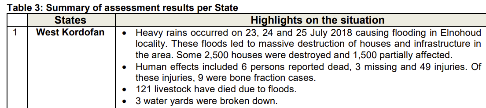
Data extracted from dataset
Year |
Start_Date |
End_Date |
Date |
source_ID |
admin_level |
admin_1 |
admin_2 |
admin_3 |
admin_camp |
Impact type |
Impact_quantity |
Impact_quality |
|---|---|---|---|---|---|---|---|---|---|---|---|---|
2018 |
23/07/2018 |
30/07/2018 |
23/07/2018 |
2018_IFRC_20180813 |
Locality |
West Kordofan |
Elnohoud |
houses damaged_totaly |
2500 |
|||
2018 |
23/07/2018 |
30/07/2018 |
23/07/2018 |
2018_IFRC_20180813 |
Locality |
West Kordofan |
Einhoud |
houses_damaged_partially |
1500 |
|||
2018 |
23/07/2018 |
30/07/2018 |
23/07/2018 |
2018_IFRC_20180813 |
State |
West Kordofan |
deaths |
6 |
||||
2018 |
23/07/2018 |
30/07/2018 |
23/07/2018 |
2018_IFRC_20180813 |
State |
West Kordofan |
missing people |
3 |
||||
2018 |
23/07/2018 |
30/07/2018 |
23/07/2018 |
2018_IFRC_20180813 |
State |
West Kordofan |
Injured |
49 |
||||
2018 |
23/07/2018 |
30/07/2018 |
23/07/2018 |
2018_IFRC_20180813 |
State |
West Kordofan |
livestock deaths |
121 |
||||
2018 |
23/07/2018 |
30/07/2018 |
23/07/2018 |
2018_IFRC_20180813 |
State |
West Kordofan |
water infrastructure_damage |
3 |
SUDAN FLOOD RESPONSE HUMANITARIAN PARTNERS UPDATE BY STATE #3 (as of 19 Oct, 2020)
The map on the first page shows affecte population per state. This information can be extracted.
{kind=link}
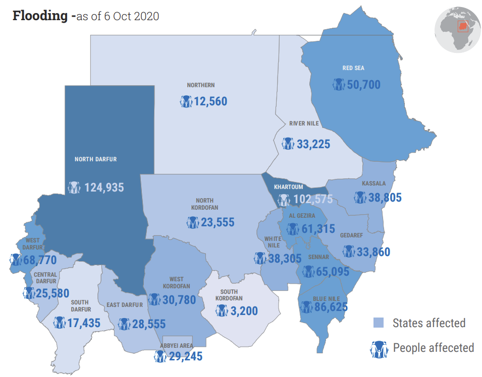
Data extracted from dataset
Year |
Start_Date |
End_Date |
Date |
source_ID |
admin_level |
admin_1 |
admin_2 |
admin_3 |
admin_camp |
Impact type |
Impact_quantity |
Impact quality |
|---|---|---|---|---|---|---|---|---|---|---|---|---|
2020 |
07/2020 |
09/2020 |
2020 OCHA 20201025 |
State |
Northern |
pop_affected |
125660 |
|||||
2020 |
07/2020 |
09/2020 |
2020 OCHA 20201025 |
State |
River Nile |
pop_affected |
33225 |
|||||
… |
… |
… |
… |
… |
… |
… |
… |
… |
… |
… |
… |
Humanitarian Bulletin Sudan Issue 35 | 22 - 28 August 2016
{kind=link}
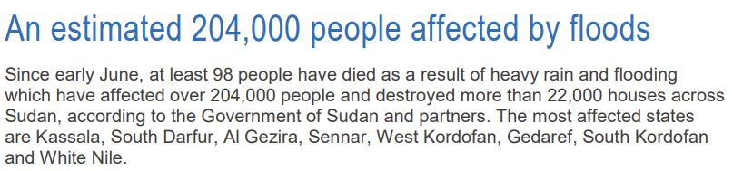
Data extracted from dataset
Year |
Start_Date |
End_Date |
Date |
source_ID |
admin_level |
admin_1 |
admin_2 |
admin_3 |
admin_camp |
Impact type |
Impact_quantity |
Impact quality |
|---|---|---|---|---|---|---|---|---|---|---|---|---|
2016 |
06/2016 |
09/2016 |
2016 OCHA 20160828 |
State |
Kassala |
affected |
yes |
|||||
2016 |
06/2016 |
09/2016 |
2016 OCHA 20160828 |
State |
South Darfur |
affected |
yes |
|||||
2016 |
06/2016 |
09/2016 |
2016 OCHA 20160828 |
State |
Al Gezira |
affected |
yes |
|||||
2016 |
06/2016 |
09/2016 |
2016 OCHA 20160828 |
State |
Sennar |
affected |
yes |
|||||
… |
… |
… |
… |
… |
… |
… |
… |
… |
… |
… |
… |
… |
Sudan Floods Countinue (FloodList)
The quote below is just one bit of relevant information from the flood list article.
{kind=link}
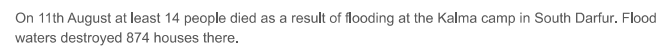
Data extracted from dataset
Year |
Start_Date |
End_Date |
Date |
source_ID |
admin_level |
admin_1 |
admin_2 |
admin_3 |
admin_camp |
Impact type |
Impact_quantity |
Impact quality |
|---|---|---|---|---|---|---|---|---|---|---|---|---|
2013 |
01/08/2013 |
21/08/21 |
11/08/2013 |
2013 Floodlist 201308 |
Camp |
South Darfur |
Bellel |
Kalma Camp |
deaths |
14 |
||
2014 |
01/08/2014 |
21/08/22 |
11/08/2014 |
2014 Floodlist 201308 |
Camp |
South Darfur |
Bellel |
Kalma Camp |
houses_damaged_totaly |
874 |
Task 6: HIA Data Cleaning ✅#
Attention
In this exercise, you can skip this step by using the provided data in the folder task_7
When creating such a dataset there will be errors like misspellings of names or wrong numbers. To not create faulty analysis products, we need to make sure that our data is consistent. Especially location names are vital in this context since we use these columns to join the data later on a geodata set in QGIS. If for example state names are spelled wrong, this data will be lost. To make sure our data is consistent, we need to clean it. Although this can be done using many different programs like Excel, R or Python, we recommend using OpenRefine.
You can do this step task by cleaning the data you compiled in the previous steps or the data from the folder task_6. If you want to use the data from the „task_6“ folder, your principal task is to clean the file „Sudan_Impact_uncleaned“. To check your results, you can compare your cleaned data with the file „Imapct_Sudan_cleaned“.
Year and Columns:
Check if all values are within the expected range of years.
Ensure that there are no missing or invalid year values becaus we need a year information for all data
OpenRefine Step: Use the “Text facet” or “Numeric facet” to explore the distribution of values in the Year column. Use the “Text filter” or “Numeric filter” to filter out any rows with invalid or missing year values.
Date Columns (Start_Date, End_Date, Date):
Check if all dates are in the correct date format.
Ensure that there are no inconsistent date values.
OpenRefine Step: Use the “Edit cells” > “Common transforms” > “To date” option to convert date columns to a standard date format. Use the “Text facet” to identify and correct any inconsistencies in formatting or missing dates.
source_ID Column:
Check that there is only one way of spelling for every individual source_ID!
Check if all source IDs follow a consistent naming convention.
Ensure that there are no missing source IDs.
OpenRefine Step: Use the “Text facet” to explore the distribution of values in each admin level column. Click on
Clusterand setMethodtoKey collisionorNearest neighbor. Adjust wrong names by checkingMergeand adjust theNew cell valueand click onMerge selected & re-cluster
Admin Columns (admin_level, admin_1, admin_2, admin_3, admin_camp):
Check if all administrative units are correctly categorized.
Ensure that there are no misspelled or inconsistent administrative unit names.
OpenRefine Step: Use the “Text facet” to explore the distribution of values in each admin level column. Click on
Clusterand setMethodtoKey collisionorNearest neighbor. Consolidate the of states and loclities that they are consisten with the list in the location chapter.Adjust wrong names by checkingMergeand adjust theNew cell valueand click onMerge selected & re-cluster
Impact Type Column:
Check if all impact types are correctly categorized and named.
Ensure that there are no duplicate or missing impact types.
OpenRefine Step: Use the “Text facet” to explore the distribution of values in each admin level column. Click on
Clusterand setMethodtoKey collisionorNearest neighbor. Adjust wrong names by checkingMergeand adjust theNew cell valueand click onMerge selected & re-cluster
Impact Quantity Columns:
Check if all numerical values are within expected ranges.
Ensure that there are no missing or invalid numerical values.
OpenRefine Step: Use the “Numeric facet” to explore the distribution of values in each numerical column. Use the “Edit cells” or “Transform” option to handle missing or invalid values, and standardize formatting.
Impact Quality Columns:
Check that the same impacts are spelt consistently. For example illness names.
OpenRefine Step: Use the “Text facet” to explore the distribution of values in each admin level column. Click on
Clusterand setMethodtoKey collisionorNearest neighbor. Adjust wrong names by checkingMergeand adjust theNew cell valueand click onMerge selected & re-cluster
Delete redundant data
It might be the case that you have for one flood event, multiple information on for example affected populations for the same location. This could later be a problem when you want to analyse the data. Probably, the reddened information is from two different sources. So you can delete the information of the older source and only keep the one from the up-to-date source as possible.
Task 7: Joining P-Code columns ✅#
Attention
In this exercise, you can skip this step by using the provided data in the folder task_8
Usually, it is easier in QGIS to work with data having P-code columns in contrast to state or district names. There is just less potential for errors. Once you are done with data compiling and cleaning, it is recommended to join p-code columns to your data. Below you can find a method to do that in Excel.
Join P-code columns in Excel
Create a new empty Excel file and name it „Suadn_impact_p_code“.
Open the new Excel file and click on the
Datatab. Click onGet Data->From Workbook-> select your cleaned impact data file.The „Navigator“ Window will open. Select the relevant Excel sheet. Click on the drop-down menu
Load-> SelectLoad to. The „Import Data“ Window will open. Here selectOnly Create ConnectionRepeat steps 2 and 3 for the file „sdn_adminboundaries_tabulardata.xlsx“. Select the sheet „ADM1“
Once you loaded both files you should see the „Queries & Connection “panel on the right-hand side of your Excel. The panel should show the impact sheet and the ADM1 sheet
Now, click on the
Datatab ->Get Data->Combine Queries->Merge. The window „Merge“ should open.In the „Merge“ window, select the „admin_1“ column for the impact dataset and the „ADM1_EN“ and „ADM1_PCODE“ for the ADM1 table.
Under „Join Kind“ select
Left Outer (all from first, matching from secound). This will take all rows from the impact dataset and the matching data from the ADM1 table. The information below should show a green check and „The selection has matched [the number of your rows] out of the first [Number of your rows] rows. If not, some of your state names are not consistent with the ones in the ADM1 file. You would need to do more data cleaning. ClickOkThe new window „Merge 1 – Power Query Edito“ will open. Click on the
 icon next to ADM1. Select only the columns you want to keep. We recommend to only keep „ADM1_EN“ and „ADM1_PCODE“.
icon next to ADM1. Select only the columns you want to keep. We recommend to only keep „ADM1_EN“ and „ADM1_PCODE“.Uncheck „Use original column names as prefix“
Click
OK.
The table preview should now show your whole impact table with the columns keep „ADM1_EN“ and „ADM1_PCODE“ on the right.
Click on
Close & Load.
The Result should be the Excel file „Suadn_impact_p_code“. The file should contain all info from the original impact table and the two new columns „ADM1_EN“ and „ADM1_PCODE“.
Task 8: Data export using Pivot-Table in Excel ✅#
Impact Quantity for one year on state level:
Open the Excel dataset.
Turn the data in a table by clicking on
Insert->Table-> checkMy table has headersAlso under the
Insert-Tab click onPivot Table. Make sure your table range is correct. CheckNew Worksheet. ClickOK.Setup the pivot table by placing the columns as follows:
Filter: Start_year
Columns: Impact_Type
Rows: admin_1 or admin_1_PCODE (If you want to use this table in QGIS, you should use admin_1_PCODE Instead of admin_1)
Values: Impact_quantity
To see the sum of the different impacts click on Impact_quantity under Values ->
Value Field Settings-> selectSum.Directly above the pivot table, you should see the option to filter by year. Select the year you are interested in. For the following example the year 2020 was used.
Now you can just copy the whole table, and place it in a new worksheet. Make sure to only paste the values. Save this output as a CSV-file, this will make the import of the subset into QGIS easier. Now we can use this table to join it with an existing geodataset in QGIS.
Flood events in Sudanese states for all the recorded years
In this section we want to analyse and visualise all recorded flooding events for all the Sudanese state. With our filter for the Impact-Type we derive information for the years 2003 until 2021.
In the first step we will create a new
pivot tableand store it in a new sheet. Here we will specify the following:
Columns: Impact_Type
Rows: admin_1_PCODE
Values: Count of impact_quality
Now we want to filter the columns labels to the following impact types:
Event
Flash-flood
Flood
Flooding
We also want to include the Event and Flash-floods as these types can also be associated with flooding events as a result of heavy rainfall, seasonal rainfall, etc.
We also want to make sure that we rename the column containing the sum of the flooding events to Sum flood events.
Now we export this excel sheet as a CSV file and import it into QGIS. We will open the
Data Source Managerand select theDelimited Textsection. Here we need to do the following specifications (Fig. 136).
Task 9: Data visualization and analysis in QGIS#
Open QGIS and create a new projeckt.
Import the file “sdn_adm_cbs_nic_ssa_20200831 — sdn_admbnda_adm1_cbs_nic_ssa_20200831” from the input file in QGIS.
Visualise impact quantity data for one year on state level in QGIS:
Import the csv fille “Sudan_admin1_Flood_Impact_quantity_2020.CSV” from the input folder of task 8 in QGIS by opening the
Data Source Managerand select theDelimited Textsection.Here you can input your CSV-file and depending on the
File Formatyou need to define Costum delimiters or you can just select CSV. In thix case go with semicolon;. Always check the Sample Data output at the bottom to see if the import is working as expected.Record and Fields Options: Specify that your first record is a header.Geometry Definition: SelectNo geometry.Click
Add
Outcome: You should now have your “Sudan_admin1_Flood_Impact_quantity_2020” file as table in QGIS.
{kind=link}
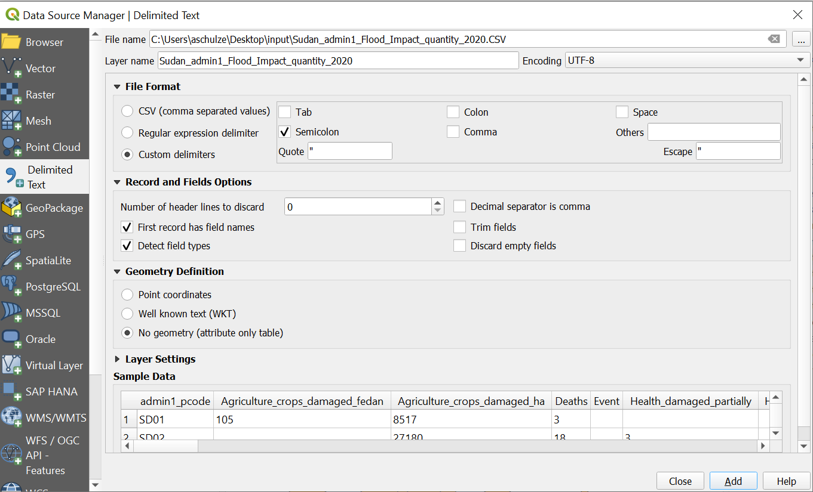
Fig. 133 Import of the CSV data impact quantity 2020 on state level#
To turn the impact data into a geodataset we will join it with the — layer based on th p-codes. We will use the tool
Join attributes by field value.Input Layer: “sdn_adm_cbs_nic_ssa_20200831 — sdn_admbnda_adm1_cbs_nic_ssa_20200831”Table field: “admin1Pcode”Input Layer 2: “Sudan_admin1_Flood_Impact_quantity_2020”Table field 2: “admin1_pcode”Join Type: “Take attributes of the first matching features only (one-to-one)Name the new file “Sudan_admin1_impact_quantity” and save it in your “result” folder
Click
Run
Outcome: You should now have the layer „Sudan_admin1_impact_quantity“ in your QGIS. The layer should have all columns from Sudan_admin1_Flood_Impact_quantity_2020 and sdn_adm_cbs_nic_ssa_20200831 — sdn_admbnda_adm1_cbs_nic_ssa_20200831.
{kind=link}
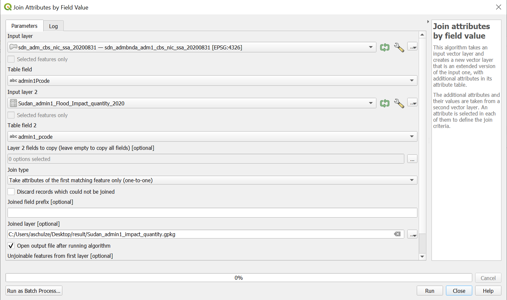
Fig. 134 Join the table information onto the geodata#
Now we can start creating maps or spatial analysis with our impact data. Let’s create a map that shows destroyed houses in 2020. Since absolute destroyed houses are natural numbers, we use the option
Graduated(Wiki Video).Right-click on the layer “Sudan_admin1_impact_quantity” in the
Layer Panel->Properties. A new window will open up with a vertical tab section on the left. Navigate to theSymbologytab.On the top you find a dropdown menue. Open it and choose
Graduated.Under
Valueselect “Houses_damaged_totally”.Color ramp: Select a white-to-red color ramp.Mode: Equal Count (Quantile)Classes: 5Click
ClassifyClick
Apply
{kind=link}
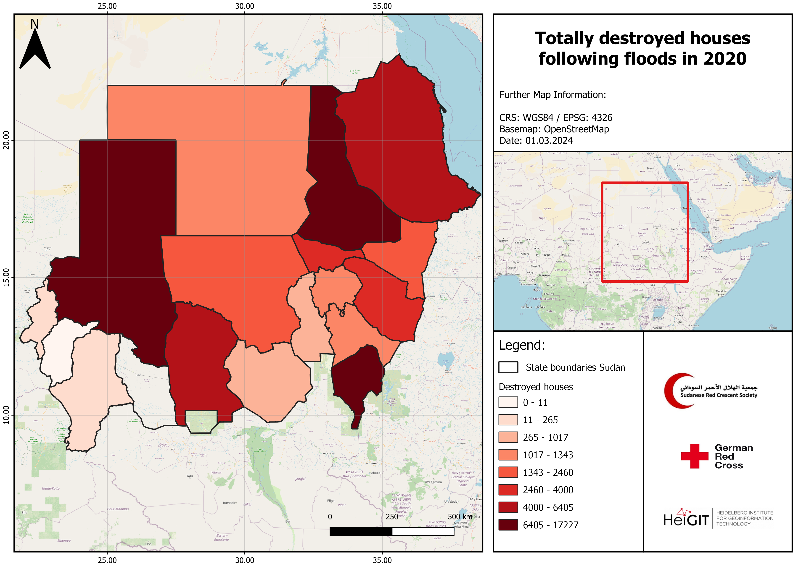
Fig. 135 Example map of destroyed houses in Sudan 2020#
Flood events in Sudanese states for all the recorded years
In this section we want to analyse and visualise all recorded flooding events for all the Sudanese state. With our filter for the Impact-Type we derive information for the years 2003 until 2021.
Now we impoer the file “Floods_Sudan_all_years” from the input folder. We will open the
Data Source Managerand select theDelimited Textsection. Here we need to do the following specifications (Fig. 136).
{kind=link}
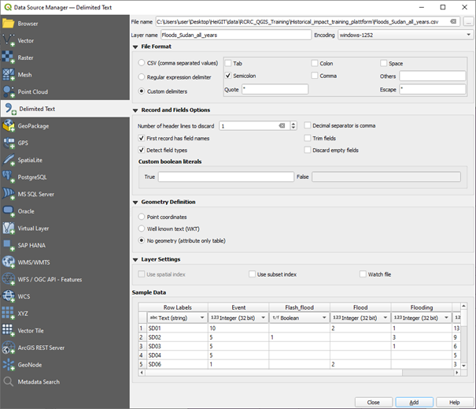
Fig. 136 Import of the CSV data#
The next step follows the same logic as step 2 in the previous example. We will use geodata that contains information about the states of Sudan and join them with the imported CSV data. We will use the
Join attributes by field valuetool and select the ADM1_PCODE as the table field used for the join. An example is shown in Fig. 137.
{kind=link}
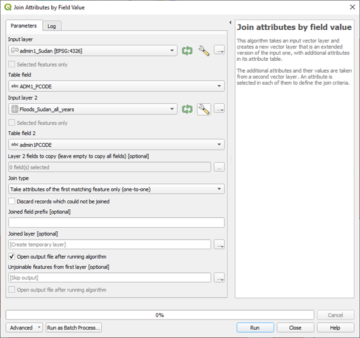
Fig. 137 Join the table information onto the geodata#
Now we can visualise our results using
Graduatedand selecting the corresponding column of the attribute tableSum flood events. Select an appropriate color scheme and start creating your map. Your final product could look like Fig. 138.
{kind=link}
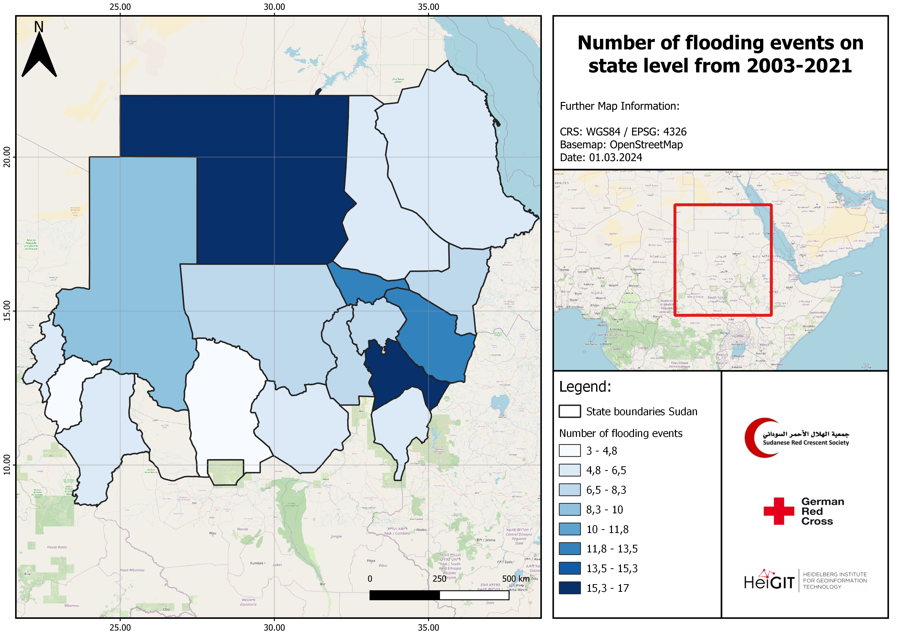
Fig. 138 Example map#
Note
Two states have NULL values and will not appear when styling the data. The original admin1 Sudan dataset can be used as a mask with the correct styling to include them in our map. This way, we can display the state boundaries without adding any new content.